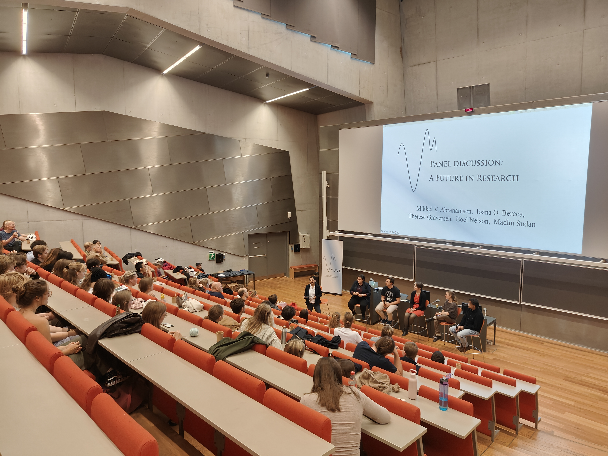

WAVE 2025
10 October 2025 · University of Copenhagen, Denmark
The first WAVE workshop featured technical talks and personal reflections in Theoretical Computer Science, together with a panel discussion on current challenges in the field.
Speakers
- Meena Mahajan, Institute of Mathematical Sciences, India
- Therese Graversen, IT University of Copenhagen, Denmark
- Ioana-Oriana Bercea, KTH Royal Institute of Technology, Sweden
- Xiao Hu, University of Waterloo, Canada
Panelists
- Mikkel Abrahamsen, University of Copenhagen, Denmark
- Ioana-Oriana Bercea, KTH Royal Institute of Technology, Sweden
- Therese Graversen, IT University of Copenhagen, Denmark
- Boel Nelson, University of Copenhagen, Denmark
- Madhu Sudan, Harvard University, United States
Panel topic
A future in research?